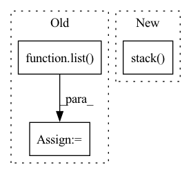

Pattern ID :9382
Before Change
self.current_actor_idx = self.current_actor_idx + 1 if self.current_actor_idx < len(self.actors) - 1 else 0
// Stack in concurrency (= number of actors) dimension
conc_stacked_records = [SpacesStepRecord.stack_records(list( recs) ) for recs in list(zip(*stacked_records))]
// Stack in time dimension to a single stacked record
time_stacked_records = SpacesStepRecord.stack_records(conc_stacked_records)
dequeue_time = time.time() - start_wait_time
return time_stacked_records.to_torch(device=learner_device), 0, 0, dequeue_timeAfter Change
trajectories.append(trajectory)
self.current_actor_idx = self.current_actor_idx + 1 if self.current_actor_idx < len(self.actors) - 1 else 0
stacked_record = SpacesTrajectoryRecord.stack_trajectories(trajectories).stack()
dequeue_time = time.time() - start_wait_time
return stacked_record.to_torch(device=learner_device), 0, 0, dequeue_time
In pattern: SUPERPATTERN
Frequency: 4
Non-data size: 3
Instances Fragment ID: 33590608
Project Name: enlite-ai/maze
Commit Name: 5ee22863d3ed46b7ef9708310aa69f072c944107
Time: 2021-03-25
Author: office@enlite.ai
File Name: maze/train/parallelization/distributed_actors/dummy_distributed_actors.py
M Class Name: DummyDistributedActors
N Class Name: DummyDistributedActors
M Method Name: collect_outputs(2)
N Method Name: collect_outputs(2)
M Parent Class: BaseDistributedActors
N Parent Class: BaseDistributedActors
M File Name: maze/train/parallelization/distributed_actors/dummy_distributed_actors.py
N File Name: maze/train/parallelization/distributed_actors/dummy_distributed_actors.py
M Start Line: 69
M End Line: 86
N Start Line: 70
N End Line: 83
Before Change
perform_step = step % ctx.optimizer.statistics_compute_steps == 0
init_state = statistics
new_statistics = list( efficient_cond(perform_step, compute_updated_statistics, init_state))
else:
new_statistics = [[]] * len(statistics)
statistics = []After Change
// Pad statistics and exponents to next multiple of num_devices.
packed_statistics = [pad_square_matrix(stat, max_size) for stat in statistics]
preconditioners_flat, errors_flat = jax.vmap(pth_root)(jnp.stack( packed_statistics) , jnp.stack(exponents))
def _skip(error):
return jnp.logical_or(jnp.isnan(error), error >= INVERSE_FAILURE_THRESHOLD).astype(error.dtype) Fragment ID: 33590609
Project Name: homebrewnlp/homebrewnlp-jax
Commit Name: d258d7d1e8b9ee04ce0eacec48b8352e7eece742
Time: 2022-05-11
Author: 39779310+ClashLuke@users.noreply.github.com
File Name: src/shampoo.py
M Class Name: AnonimousClass
N Class Name: AnonimousClass
M Method Name: shampoo(3)
N Method Name: shampoo(3)
M Parent Class:
N Parent Class:
M File Name: src/shampoo.py
N File Name: src/shampoo.py
M Start Line: 455
M End Line: 510
N Start Line: 452
N End Line: 482
Before Change
query_idx = list(map(lambda x: find_pattern(x[0], x[1]), zip(search_queries, input_ids.tolist())))
if isinstance(layer, list):
representations = list( map(lambda x: x[torch.arange(num_inputs)[:, None], query_idx].mean(1), hidden_states))
else:
if layer != "all":
if layer is None:
layer = self.layersAfter Change
elif layer > self.layers:
raise ValueError(f"Number of layers specified ({layer}) exceed layers in model ({self.layers})!")
// representations = hidden_states[torch.arange(num_inputs)[:, None], query_idx].mean(1)
representations = torch.stack( [hs.squeeze()[idx[0]:idx[1]].mean(0) for hs, idx in zip(hidden_states.split([1] * num_inputs), query_idx)])
return representations
def extract_paired_representations(self, sentence_words: Union[Tuple[str], List[Tuple[str]]], layer:int = None) -> Tuple: Fragment ID: 33590607
Project Name: kanishkamisra/minicons
Commit Name: b9f76e2dfc167677a5e1a4877b8bc76799a01974
Time: 2021-08-21
Author: menogetusername@gmail.com
File Name: minicons/cwe.py
M Class Name: CWE
N Class Name: CWE
M Method Name: extract_representation(3)
N Method Name: extract_representation(3)
M Parent Class: object
N Parent Class: object
M File Name: minicons/cwe.py
N File Name: minicons/cwe.py
M Start Line: 109
M End Line: 132
N Start Line: 110
N End Line: 132